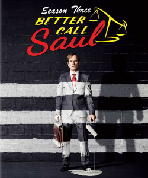
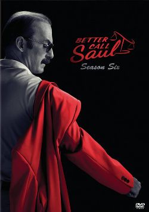

Las 6 Temporadas de la Serie
Un recorrido cronológico por la génesis, auge y caída moral de Jimmy McGill en Albuquerque.
 Temporadas 1 & 2
Temporadas 1 & 2
Los Inicios de Jimmy y el caso Sandpiper
Jimmy subsiste defendiendo a delincuentes de poca monta mientras tiene su humilde oficina en el cuarto trasero de un salón de manicura. Cuando descubre un monumental fraude multimillonario contra ancianos en el geriátrico Sandpiper Crossing, busca la aprobación de su prestigioso hermano Chuck McGill, desatando una dolorosa traición fraternal.
- Primer encuentro accidentado con Tuco Salamanca y Nacho Varga.
- Alianza inicial con Mike Ehrmantraut en la caseta de estacionamiento del juzgado.
- El paso fugaz y rebelde de Jimmy por el bufete de lujo Davis & Main.

Temporadas 3 & 4Chicanery, Ruptura y el Ascenso de Gus
La tensión entre hermanos explota en una épica audiencia del colegio de abogados. Tras desenmascarar la hipersensibilidad electromagnética ficticia de Chuck, Jimmy es inhabilitado temporalmente de ejercer la abogacía. Paralelamente, Gus Fring consolida su negocio en Los Pollos Hermanos y Mike supervisa la construcción subterránea del superlaboratorio.
- El histórico discurso de Chuck en el juicio ("¡1216, una después de la Carta Magna!").
- Trágico desenlace de Chuck y la venta de celulares prepagos por parte de Jimmy.
- Jimmy recupera su licencia y pronuncia: "S'all good, man!".

Temporadas 5 & 6El Abogado del Cartel y el Juicio Final
Adoptando plenamente el nombre de Saul Goodman, Jimmy se convierte en el "amigo del cartel" al ser contratado por el carismático y letal Lalo Salamanca. Con Kim Wexler cruzando líneas éticas irreversibles, la trama culmina con consecuencias fatales para Howard Hamlin y el regreso a blanco y negro con la condena final de Gene Takavic en Omaha.
- La agónica travesía de Jimmy y Mike por el desierto con dos bolsas llenas de millones ("Bagman").
- El impactante clímax en el departamento de Kim y Jimmy ("Point and Shoot").
- Confesión final en el tribunal recuperando su verdadero nombre: James McGill.